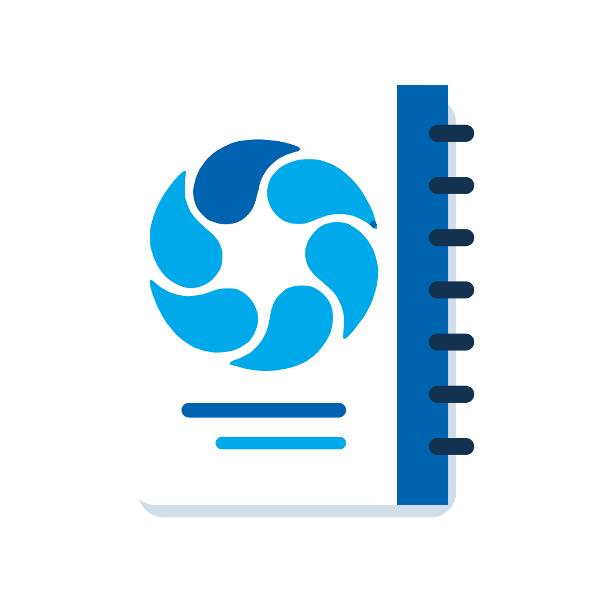

מט״ש אוג
יומן אירועים
רישום מהיר של אירועי משמרת, תקלות וטיפולים

רישום מהיר של אירועי משמרת, תקלות וטיפולים
אפשר לסדר את הכרטיסים: גוררים כרטיס בכותרת שלו (בטלפון — לחיצה ארוכה על הכותרת ואז גרירה).
משימה שמסיימים נרשמת אוטומטית ביומן כאירוע סגור, עם מה שבוצע.
אנשים, מיקומים, ציוד וסוגי אירוע — מה שכאן פעיל מופיע בכל רשימות הבחירה (רישום אירוע, משימות). הוצא משימוש מסתיר ערך מכל הרשימות (עובד שעזב, ציוד שהוחלף) — האירועים הישנים לא משתנים, וההיסטוריה עדיין מוצאת אותו בסינון. ביומן המשותף — לכל הצוות.
קובץ תיקונים = רשימת מיזוגים ופיצולים מוכנה מראש. לפני שמשהו משתנה מוצגת רשימה לבדיקה.
הרישומים נשמרים בדפדפן. חבר קובץ בתיקייה מסונכרנת כדי שיהיה גיבוי וגישה ממחשבים אחרים.
לחיצה ארוכה על אייקון האפליקציה פותחת קיצורים: רישום אירוע, דשבורד, אירועים פתוחים.
גרסה 1.62 · 29/09/2026
אירועי הארכיון שנטענו מהיומנים הישנים נעולים לעריכה ולמחיקה (אפשר רק לסגור או לפתוח אותם מחדש). אפשר למחוק רק את מה שרשמת באפליקציה.